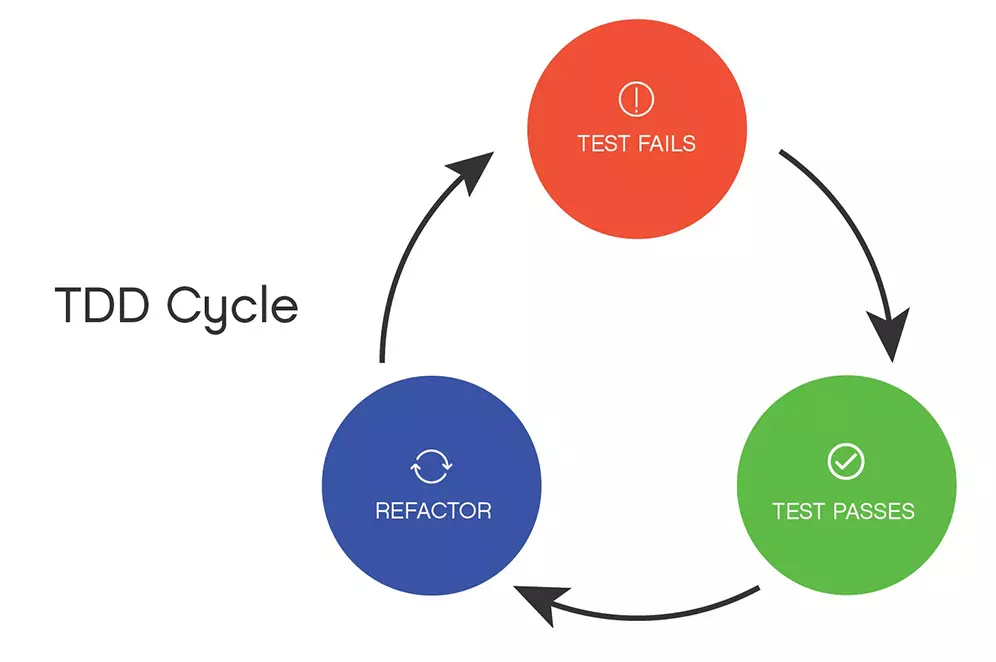

Flutter & TDD 实践（零）：TDD简述
Flutter & TDD 实践（零）：TDD简述
Test-driven development (TDD) is a way of managing fear during programming — Kent Beck
- 想写出健壮的代码？
- 想减少调试时间？
- 想让代码写得好看？
- 想试试很酷的编程方法？
- 想获得更多编程的快乐？
也许TDD能帮你做到。
是不是像广告词。
知道TDD这个词很多年了，但只停留在尝试的程度。而没有实践就没有发言权，其中的酸甜苦辣也得尝试才能体会。
所以最近我也开始实践TDD，用于我的Flutter学习实践中，并记录实践过程。
这篇将介绍下TDD，以及我的一些理解。
什么是TDD
Test-driven development (TDD) 即测试驱动开发，顾名思义：开发人员先写测试，让测试用例帮助开发人员进行开发。
这是敏捷开发中的一种实践方法。
在一些敏捷开发实践中，TDD是必须的，比如极限编程（XP）

RED → GREEN →Refactor 即 小步快走的 写测试→通过测试→重构
TDD帮助我们什么？
先写测试，由测试用例帮助开发人员开发代码。
注意帮助两个字，测试能帮助我们什么呢？
- 帮助任务拆解
- 帮助我们明确逻辑
- 帮助我们验收代码
- 帮助我们重构时不必担心改坏
我们可以看看这些TDD提供的帮助，我们是不是需要的，如果不需要，那可以ctrl+w关掉这个页面啦。
如果需要，那么可以继续聊聊TDD。
TDD难在哪
看起来TDD很牛，那为什么业界少有实践呢？
不愿尝试
听过单元测试，但是没做过的人，都会说一句：哪有时间写测试啊。
但是吧，实际耗费多少时间，没实践过的人怎么会知道呢。
使用TDD觉得爽的人，说再多好处，其实不愿意尝试的人依旧不愿意尝试。
面向效果编程
也许有同学想尝试单元测试了，于是翻出自己的代码，想对这份代码写测试，结果发现这代码根本测不了，想测试，就必须重构。卒。
当我们完成一份需求后，会发现我们写出的许多代码，都是不可测试的，这是为什么呢。
现在大多数前端开发的开发流程就是：需求→写代码→看效果→修改→看效果。
（对后端来说，可能就是看控制台，看日志）
可以看到我们是以页面呈现效果来做编程目标的，我称之为面向效果编程。
在面向效果编程中，我们写一个方法、一段逻辑，目的是为了实现效果，结果就是我们用了一串面条代码的函数完成了效果。
在这种编程模式下，我们不会去尝试任何自动化测试，因为我们靠手工测试，这才是尝试单元测试时碰到的最大问题。
GUI、Web开发天然难以单测
因为现在的Web开发，强依赖框架，在没有测试覆盖的历史代码中，想要做单元测试，是要经历很多磨难的。
而且在写测试时，需要耗费很多时间来进行各种mock，解决各种依赖问题。这确实是很难解决的的问题。
因此Web开发并没有像后端一样要求很高的测试覆盖率，测试需要覆盖的是基础组件、核心代码、担心出错的代码，不需要花大量实践去测试太多依赖的高级组件。
更高层面的测试，我们交给E2E测试去做。
怎么TDD
测试驱动开发
在TDD中，我们会快速且多次的重复‘红（测试不通过） → 绿（测试通过） → 重构‘的过程 ：
- 写一个测试用例，运行测试，此时结果不通过
- 写代码用于通过测试用例，运行测试，此时测试结果为通过
- 重构刚刚写的代码（测试和业务代码），优化你的代码设计
如此一个TDD流程下来，我们得到一个通过测试并优化过的可执行代码。
流程相当的简单。
两顶帽子
开发者在开发过程中也需要些仪式感，比如小黄鸭调试法中放一只小黄鸭
在TDD中，也有关于仪式感的东西，那就是两顶帽子：
- 在添加新功能时，戴上写新功能的帽子，直到测试结果为绿色；
- 在重构时，戴上重构的帽子，在测试用例的保护下重构，保持测试结果为绿色。
两顶帽子是为了专注当下（添加功能或者重构）
一个阶段只做一件事情可以避免：
- 重构时添加没有测试覆盖的新功能
- 在添加新功能时手贱的重构
当然，戴帽子这件事情在脑子里戴就好了，不用把绿帽子戴头上。
重构驱动设计
在设计先行的情况下，我们可能会过度设计，在用上各种设计模式后，发现我们要实现的功能其实是杀鸡用上宰牛刀，所以TDD的思想是重构驱动设计。
在多个TDD周期后，我们的代码会变得复杂。
在Code review后，如果觉得必要进行代码设计以便接下来的编程，那么我们就应该开始引入必要的设计模式进行重构。
重构也是需要先写测试：重构测试用例 → 重构代码通过测试用例
当然，这个驱动有不同的做法：
- 重构驱动实现设计
- 重构驱动设计并实现
区别在于，前者已经构思过设计过但开发新功能时不在代码中表现，后者是不提前构思设计。
这两种方法都是可行的。
最后
软件开发中没有银弹，TDD也不是。
我们可以思考后决定用UTDD、ATDD、BDD甚至什么都不用，但是这不妨碍我们去学习、实践和总结，这也是开发人员需要有的一种开放和持续学习的心态。
之后我会Flutter开发中实践TDD，进行一些总结，后续更新。